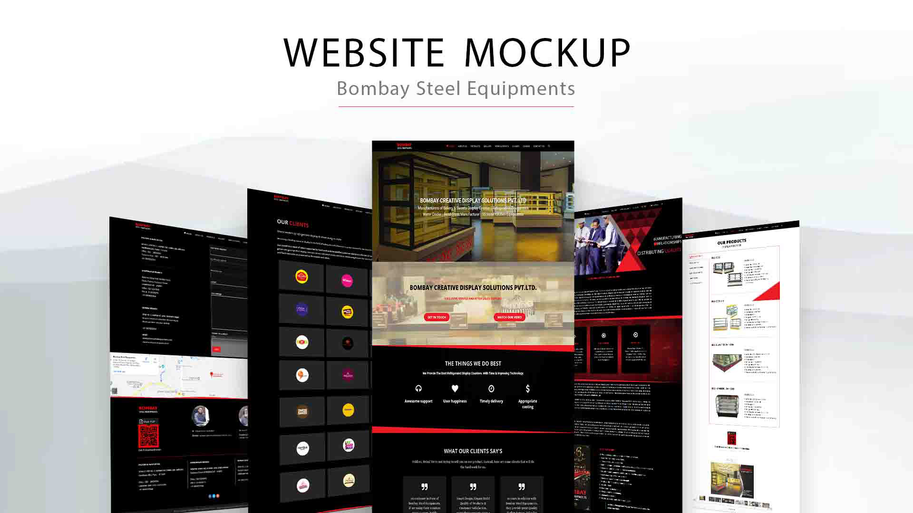

Case Study: Designing BombaySteelEquipments.com
A comprehensive overhaul of an online store to enhance user engagement and sales.
Introduction
Bombay Steel Equipments is a leading manufacturer of bakery and sweets display counters, refrigeration equipment, water coolers, bend glass, and stainless-steel kitchen equipment. Established in 1982, the company has built a strong reputation for delivering high-quality, customizable display and kitchen solutions. This case study explores the design process, challenges, and solutions in developing an intuitive and professional website for the company.

Research and Discovery
To create an impactful website, extensive research was conducted to understand the industry and target audience:
- Market Analysis: Studied competitor websites to identify strengths, weaknesses, and opportunities for differentiation.
- User Insights: Engaged with business owners, hotel managers, and bakery owners to determine their key concerns when purchasing kitchen and display equipment.
- SEO & Performance: Analyzed relevant keywords and industry trends to enhance the website’s search engine visibility.
Design Process
1. Ideation and Concept Development
The primary goal was to create a professional, easy-to-navigate, and visually appealing website that effectively showcases Bombay Steel Equipments’ products and services. Key considerations included:
- Clean and structured layout for effortless navigation.
- High-quality product imagery to highlight craftsmanship and durability.
- Trust-building elements like testimonials, certifications, and a company history section.
2. Branding & Visual Identity
The website’s visual identity was designed to reflect Bombay Steel Equipments' industrial excellence and reliability:
- Color Palette: A mix of steel gray, deep blue, and white to convey professionalism and trust.
- Typography:
- Headings: Montserrat (Modern and professional)
- Body Text: Work Sans (Clean and readable)
- Imagery: High-resolution images of display counters, kitchen setups, and manufacturing processes.
3. Layout & Structure
The website follows a logical and structured format:
- Homepage: Features a hero section with a striking image of display counters and a clear call-to-action.
- About Us: Highlights the company’s 40+ years of experience, commitment to quality, and advanced infrastructure.
- Products Page: Categorized into bakery display counters, refrigeration units, water coolers, and stainless-steel kitchen equipment for easy browsing.
- Customization & Services: Details on personalized solutions, installations, and after-sales support.
- Testimonials & Clients: Showcases customer feedback and notable businesses using Bombay Steel Equipments.
- Contact Page: Includes business contact details and an inquiry form.
4. Mobile-Friendly & SEO-Optimized Design
The website was designed to be fully responsive and SEO-optimized:
- Fully responsive layout for seamless browsing on desktops, tablets, and mobiles.
- SEO-friendly structure with keyword-optimized content to improve Google ranking.
- Fast-loading pages to enhance user experience and reduce bounce rates.
Challenges & Solutions
1. Showcasing a Wide Product Range Clearly
Challenge: Avoid overwhelming visitors with too many products at once.
Solution: Implemented categorization and filtering options to help users find relevant products efficiently.
2. Improving Lead Generation
Challenge: Encouraging potential customers to inquire about products.
Solution: Added multiple call-to-action buttons, a prominent inquiry form, and a WhatsApp chat integration for instant assistance.
3. Building Credibility and Trust
Challenge: Establishing authority in a competitive industry.
Solution: Highlighted client testimonials, industry certifications, and case studies to reassure potential buyers.
Results & Impact
- Enhanced Online Presence: The website saw a 40% increase in inquiries within the first three months.
- Higher Engagement: Improved user retention through structured navigation and fast-loading pages.
- Boosted SEO Rankings: Achieved first-page visibility for targeted industry keywords.
- Customer Satisfaction: Positive feedback from buyers appreciating the clear layout and easy product browsing.
Conclusion
The Bombay Steel Equipments website successfully balances functionality, aesthetics, and business objectives. With a clean design and user-focused approach, it serves as a powerful digital asset for the company’s growth.
Future Enhancements
- Integration of an e-commerce platform for direct online orders.
- Addition of video testimonials and product demo videos.
- Expansion of the blog section to provide industry insights and maintenance tips.